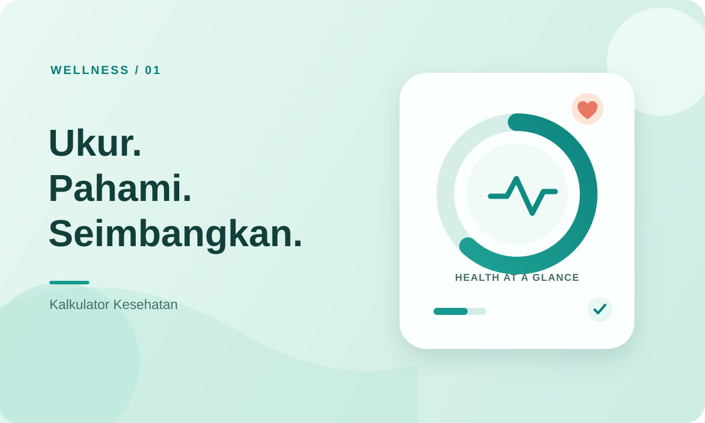
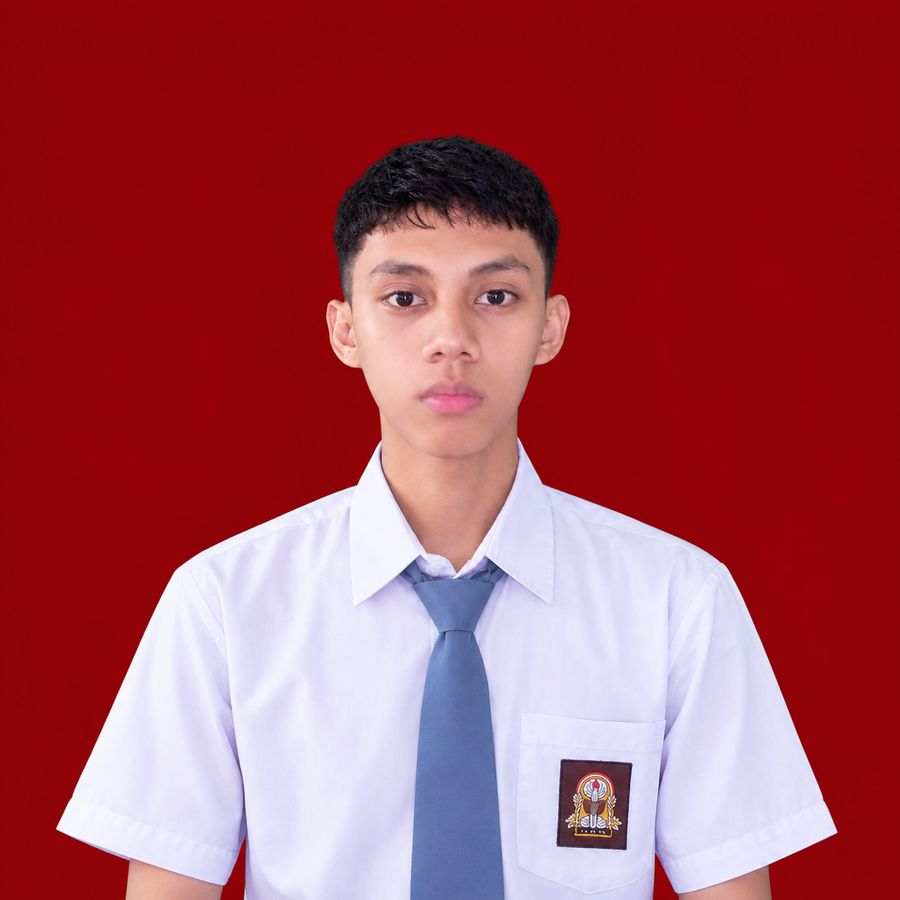
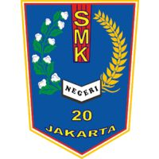
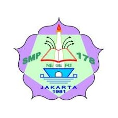
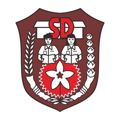

Front-End Developer
Zeini Aswin Rangkuti
“Turning curiosity into creation”

Mengenal Saya Lebih Dekat
Saya Zeini Aswin Rangkuti, siswa Rekayasa Perangkat Lunak di SMKN 20 Jakarta yang fokus pada pengembangan antarmuka web, desain responsif, dan pengalaman pengguna. Saya tertarik merancang tampilan yang rapi, mudah dipahami, dan fungsional.
Saya senang belajar melalui praktik dan terus mencoba sampai memahami suatu konsep. Dalam setiap proyek, saya memperhatikan kualitas pengalaman pengguna, struktur kode, reusable components, serta penerapan best practices agar hasil lebih terorganisir dan mudah dikembangkan.
Ke depan, saya ingin terus mengasah kemampuan dalam merancang antarmuka yang menarik dan mudah digunakan, serta menciptakan produk digital yang responsif dan bermanfaat.
Jakarta, Indonesia
Proyek Yang Pernah Dibuat
Tiga proyek yang saya buat menunjukkan kreativitas dan perhatian saya pada produk yang menarik serta mudah digunakan.
Riwayat Pendidikan
2024 — Sekarang
SMKN 20 JAKARTA
Sekolah Menengah Kejuruan | Rekayasa Perangkat Lunak

2021 — 2024
SMPN 178 JAKARTA
Sekolah Menengah Pertama

2016 — 2021
SDN 013
Sekolah Dasar

Keahlian & Kemampuan
Hard Skills
- HTML
- CSS
- JavaScript
- Laravel
- MySQL
- Figma
Soft Skills
- Cepat Belajar
- Kerja Sama Tim
- Komunikasi
- Manajemen Waktu
- Pemecahan Masalah
- Teliti & Detail
Bahasa:
Indonesia (Penutur Asli)
Inggris (Dasar-Menengah)